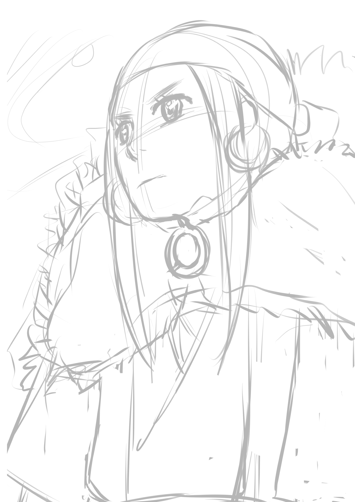

2026
09.16
09.16
アシリパさん描き途中。漫画読み返してアシリパさんの顔観察してたんだけど、アシリパさんってけっこう変顔多いんだよね（笑）

アシリパさん描き途中。漫画読み返してアシリパさんの顔観察してたんだけど、アシリパさんってけっこう変顔多いんだよね（笑）

函館旅行を思い出しながらコメント書くの楽しかった。


やっぱゴールデンカムイで一番ヤバいキャラと言えば、姉畑支遁だよね。Pixivの俳優のところに「???」って出てきたんだけど、たぶん実写で姉畑回はないからね。でもちょこっと実写での脱獄のパートで出てきたんだよね。誰だったんだろう。実写で姉畑回あったら、もう漫画の実写の悪口とか一生言えないなって思う。
にしんそばってなんであんなに美味しそうなんだろう。あと、子持ち昆布の揚げ物も美味しそう。ゴールデンカムイの食堂とかできてくれないかな。
個人的に樺太編が一番作画が神がかってる。鯉登少尉が好きだからかもしれないけど、樺太編が一番好きなんだよね。白い熊を捕まえようとしたあたりも結構好き。
ゴールデンカムイもドッグスレッドもそうだけど、野田サトル作品って４巻からさらに面白くなるんだよね。
二瓶の死に方はめっちゃ綺麗だった。二瓶をカッコいいと思わない人っていない気がする。ここで谷垣が杉本陣営になるから、ある意味必要な死だったのかもしれない。
杉本って躊躇いがないから好きなんだよ。主人公っぽくて信念があるけど、人殺しではあるんだよね。ある意味、杉本って本来の動物の姿の人間なのかもしれない。
もしただ鶴見中尉の勢力が「北海道を手に入れる」ことでなければ杉本は協力したかもしれないなと思う。でもやっぱりそのセリフは、北海道を手中にしたいってことだよね。それはアシリパさんがやりたいことじゃない。ってことだったんだろうな。
牛山って典型的な"男に好かれる男"だと思う。男社会の男。たぶん女性で牛山好きな人ってあんまりいない気がする（笑）牛山みたいなキャラっていいよね。意見が二分化するキャラって。キャラに関して議論が起こるのってすごくいい。
「エカシオトンプイ（祖父の尻の穴）」って名前つけるのまじで面白い。こういう病魔が嫌うような名前つけるのは本土の日本人にも同じ文化があったらしい。「卑弥呼」と「倭国」もそうなんじゃないかって説もあるらしくて。実際のところは分からないけど。私ならなにがいいかな……お爺ちゃん好きだったから私も「祖父の臭い息」とかがいいな。
「ヒグマは巣穴に入った人間を殺さない」って本当なのかな？それを実行したいとは思わないけどおとぎ話としては面白いかな。
「不死身の杉本は手に負えん。片手だけに」が好き。この構文使ってしまいそう。
この表情、意味を考えようとすると分からなくなる。でも、分からないままでもいい気がする。むしろその曖昧さが魅力なのかもしれない。
キャラ考察